Lit from the side, so the work glows.
In darkfield microscopy the light never hits the lens directly. Only what is really there scatters it, so the specimen shines on black. Albretsen AS is shown the same way: no backdrop and no claims, only the made things, lit.
- The site is one infinite slide. Products are places on it, laid out like the Victorian diatom arrangements in the Met's collection: precise, hand-placed and symmetric.
- The main imagery is a bespoke icon system. Each product has a specimen glyph built like a diatom valve, with striae, areolae and one signal-gold nodule. 17 striae on MCP Emails stand for its 17 tools.
- Particles are the grain. 24,000 points settle into a CC0 scanned stone or into any of the glyphs, and a signal is a pulse that ripples through them.
- Duotone and restraint. Ink and pale gold at hue 72°, with one brighter gold reserved for signals. Serif for the voice, mono for the measurements.
Duotone, hue 72°
Every colour is one OKLCH hue, 72°, from the void behind the slide to the light that scatters off it. Signal gold is the only accent and stays rare: live status, the nodule, a pulse.
A voice and a measurement
Instrument Serif (OFL) carries the voice: tall, narrow and quiet. Geist Mono (OFL) does the measuring: labels, figures, keycaps. Geist (OFL) is for running text at light weight.
549 commits · 4 connectors
claude mcp add albretsen https://albretsen.no/mcp
A small technology company that builds whatever is profitable: apps, SaaS and agent infrastructure. Published on Google Play since 2016.
The Triceratium mark
A triangular diatom valve that reads as an A, with three ocelli at the corners and the signal nodule at the centroid. The detailed version carries the areolae pore field and is for large sizes only. The wordmark is set in Instrument Serif and converted to outlines.
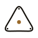
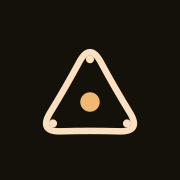
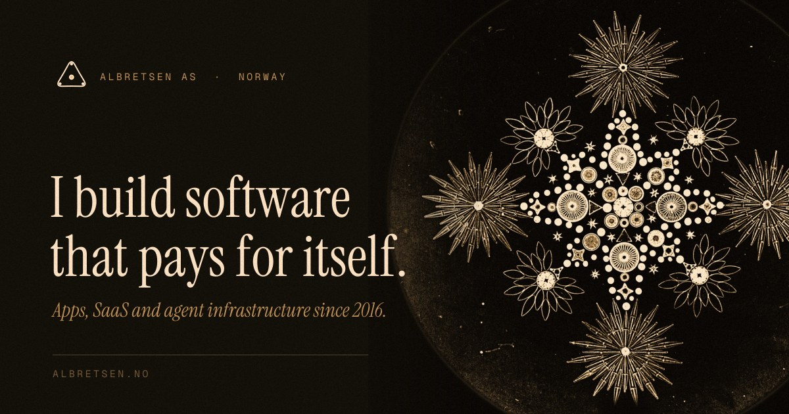
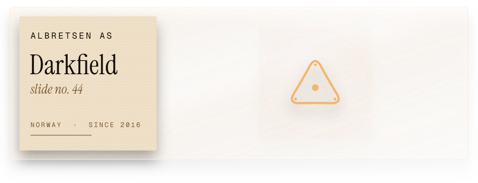
Three stills for the hero
Baked from the live particle system at 2880 px, plus a museum plate re-lit as darkfield. Use them as the poster frame under the WebGL canvas and as the fallback on low-power devices. Each comes in WebP and AVIF at 1× and 2×.
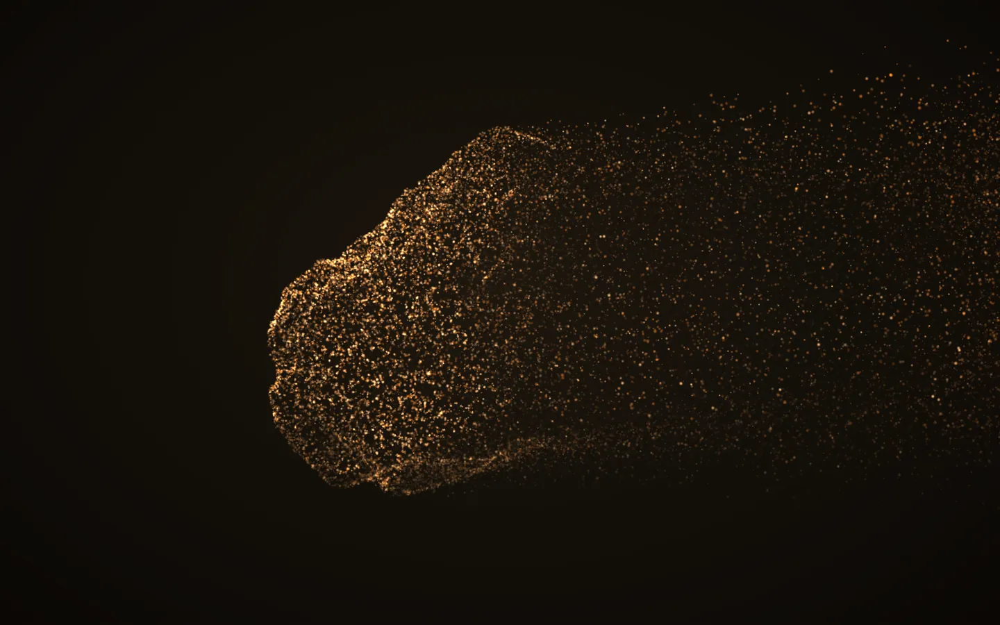
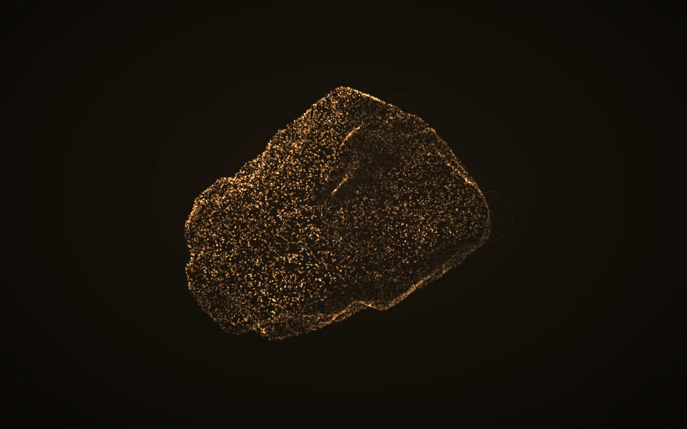
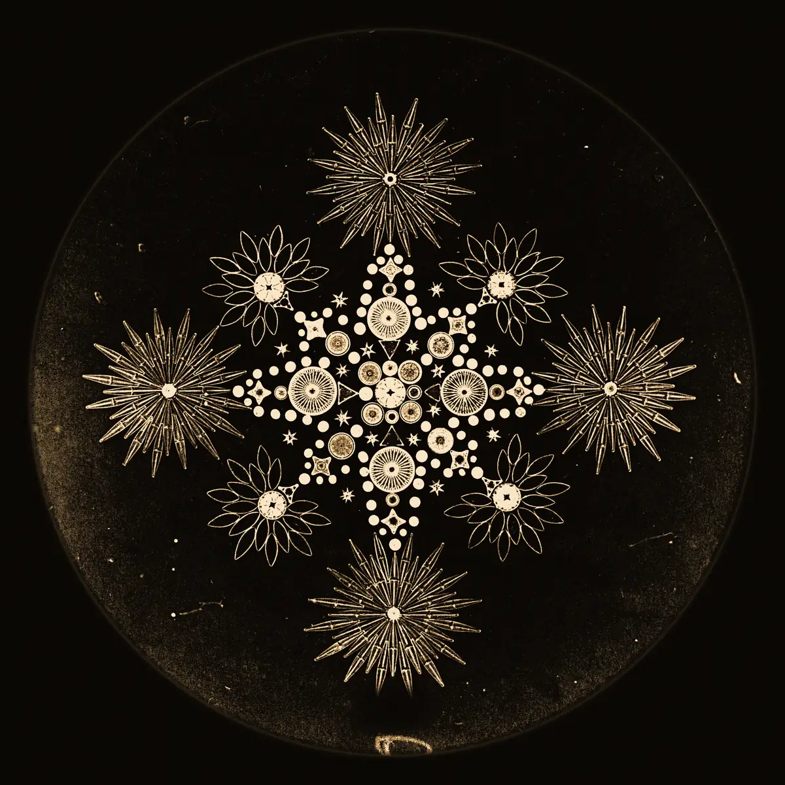
The infinite slide
A sketch of the hero mechanic built from the kit. Drag to pan and scroll or pinch to zoom. Press 1 to 4 to fly to a product, 0 to fit, and ? for every key. Products are places, retired work sits in the margin, and the museum plates are landmarks.
Specimen slides
Each live or in-progress product gets its real logo, used as-is and never recoloured, mounted at the centre of a darkfield field of view with a micrometer reticle, its glyph as a ghost and an engraved label carrying only facts from content.js. The grain stills are the same glyphs drawn by the particle system.
Luma keeps its real logo. The others have no surviving brand, so each gets a respectful stand-in: its own specimen glyph.
Bespoke glyphs, the main imagery
Eleven specimen glyphs on a 96 grid and twenty-six interface icons on a 24 grid share one construction: 1.5 stroke, round caps, hairline secondary rings at 0.75, and one signal-gold nodule. Hover a specimen to watch it re-engrave, or click it to send it to the particles.
Borrowed light
Public-domain photographs from The Met (CC0), gradient-mapped into the duotone. White-on-blue cyanotypes become gold-on-ink, as if lit in darkfield. Use them as quiet landmarks on the canvas and as section dividers.
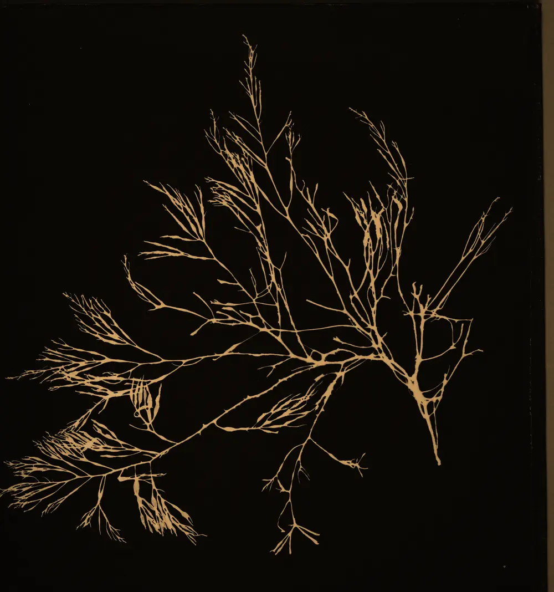
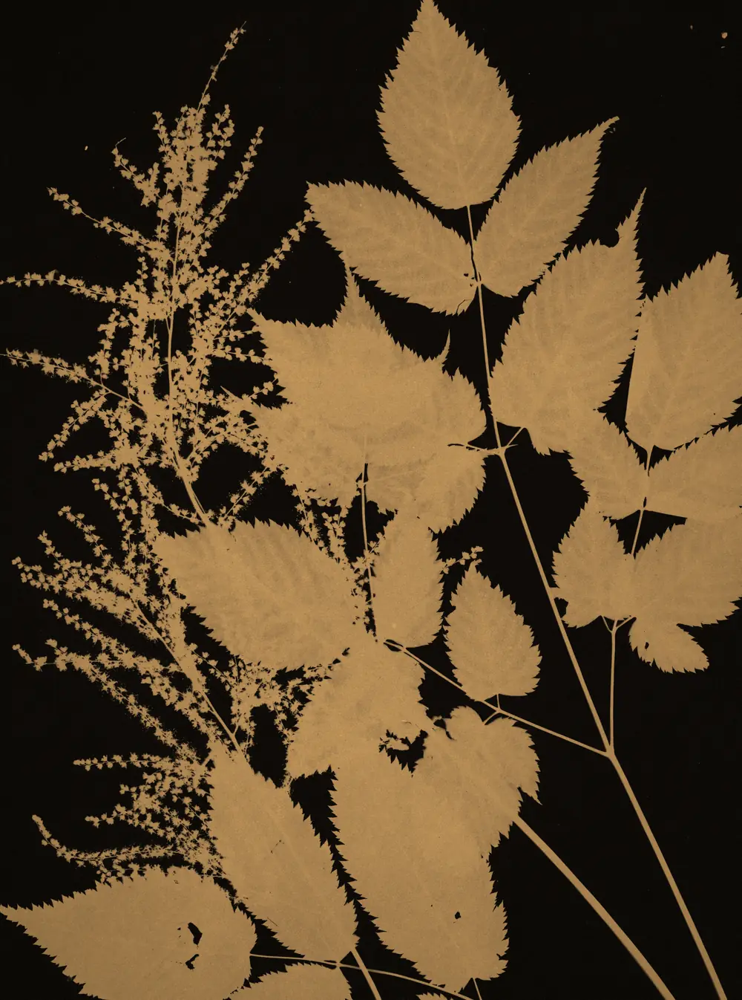
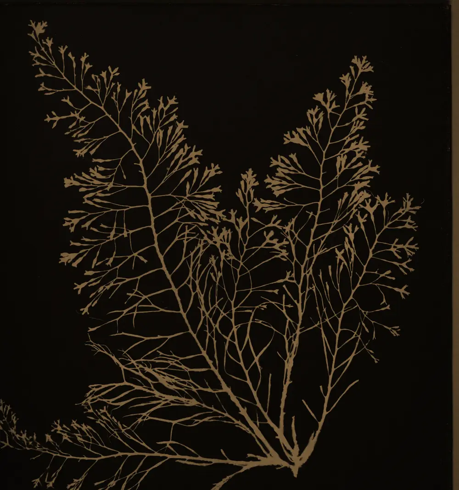
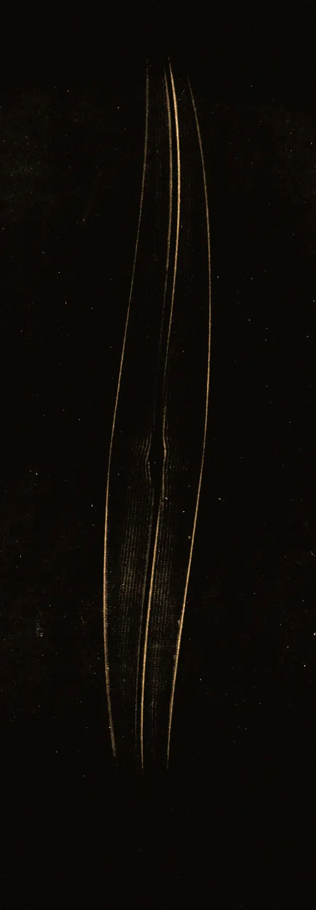
Texture and life
Small pieces for around the site: a pore lattice for panels, a canvas grid for the slide, a living film grain, a reticle ornament or loader, status tags for map markers, and a glass slide label for the footer.
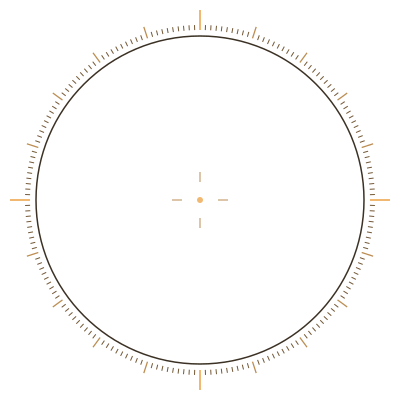
The particle specimen
3d/darkfield-particles.js is a self-contained three.js module. It renders 24,000 grains that morph between the CC0 stone and every glyph, ripple with signals, part around the pointer and dissolve on scroll. Below is its demo; press 1 to 9, 0, - and = inside it, and Space to send a signal. moon-rock.glb is the geometry-only CC0 stone, shown in a small darkfield viewer.
const df = await createDarkfield(canvas, {
base: './assets/', initial: 'rock' })
df.morph('mcp-emails') // or any SPECIMENS id
df.pulse(x, y, 1) // world units, centre 0,0
df.dissolve = 0.6 // 0..1, scrub with ScrollTrigger
df.spread = 0.2 // loosen the grain
df.pause(); df.resume(); df.destroy()Six movements
motion.css has the CSS versions and motion.js has the GSAP and ScrollTrigger versions. Each one borrows from the microscope, nothing bounces, and all of them collapse to instant under prefers-reduced-motion.
Focus pullentrance · expo.out 1.1s
Words arrive blurred and over-magnified, then resolve one by one.
Striae drawhover · pathLength redraw
Hover and the glyph re-engraves itself while the nodule takes a breath.
Iristransition · power4.inOut 0.9s
Between places the view opens through an aperture from the point you clicked.
Signal pingambient · 2.8s loop
One ring leaves the nodule every 2.8 seconds. Use it only for live status.
Stage sweepscroll · ScrollTrigger.batch
Cards glide onto the stage from below and come into focus as they cross 88% of the viewport.
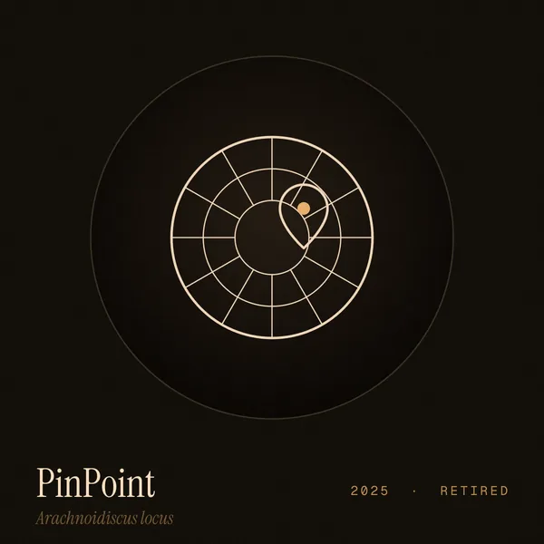
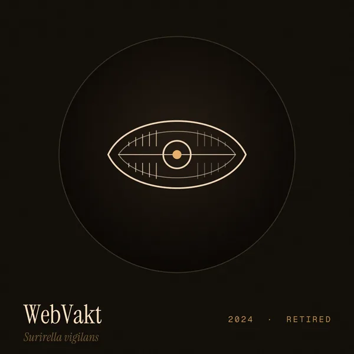
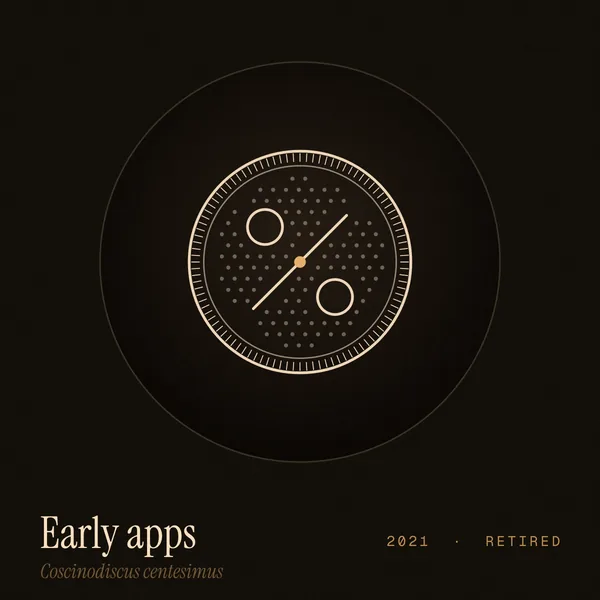
Scrub dissolvescroll · scrub 0.6
As the hero leaves, the stone peels into loose grain. Scroll back and it re-forms. See the top of this page.